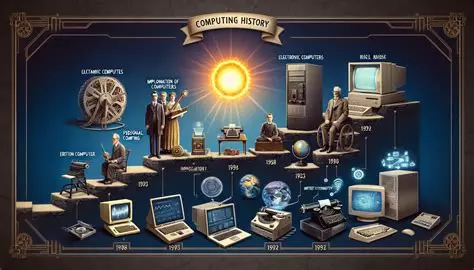
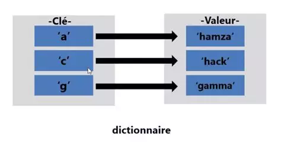
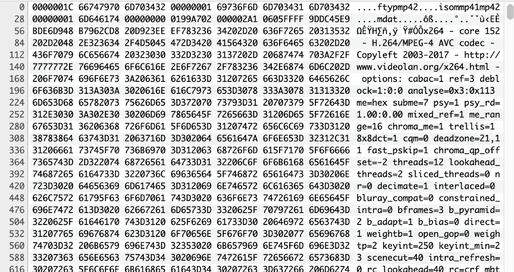
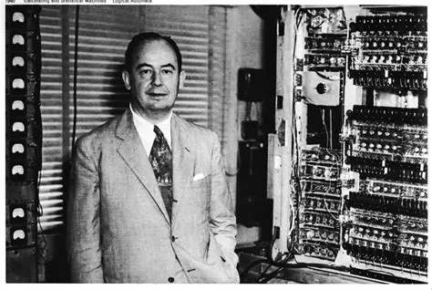
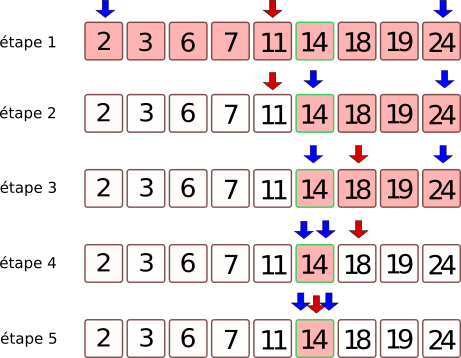
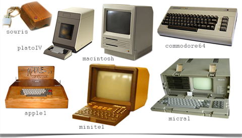
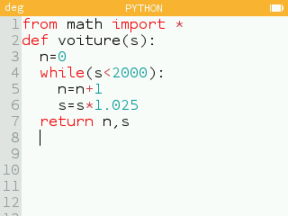
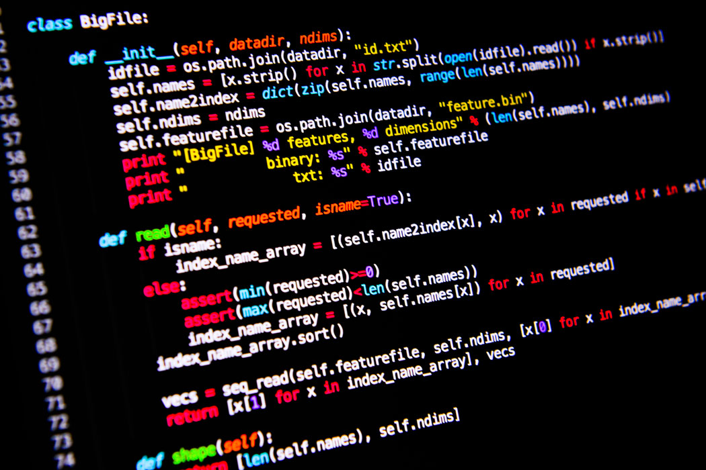
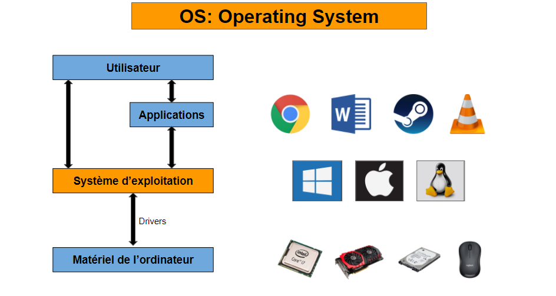

Lycée Robert Badinter
Adresse : 13 avenue de Châteaudun, 41018 Blois
Téléphone : 02 54 56 29 00
Email : hello@ik.me
Lien : Accéder au site du lycée
Lycée Robert Badinter
Adresse : 13 avenue de Châteaudun, 41018 Blois
Téléphone : 02 54 56 29 00
Email : hello@ik.me
Lien : Accéder au site du lycée
Quelles sont les notions étudiées en première et en terminale ?
Selon le programme officiel du Ministère de l'Éducation nationale et de la Jeunesse.
Les élèves découvrent l'évolution des concepts informatiques et des machines, depuis l'Antiquité jusqu'à l'ère des ordinateurs modernes et des objets connectés.

Les données sont représentées en binaire avec différents types (entiers, flottants, booléens, texte) selon leur nature et leur codage (ASCII, Unicode, etc.).
Les types construits incluent les p-uplets, tableaux et dictionnaires, qui regroupent des données variés et permettent des manipulations plus complexes.

Utilisation de structures de données comme les tableaux et les p-uplets pour organiser et manipuler des données dans des tables (tri, recherche, fusion).

Les élèves explorent la communication entre le client (utilisateur) et le serveur via des requêtes HTTP et des formulaires Web, avec une attention particulière aux protocoles et à la sécurité des données.
Introduction au modèle von Neumann des ordinateurs, à l’architecture des réseaux et aux rôles des systèmes d’exploitation et des périphériques.

Les élèves apprennent les bases de la programmation en Python,avec une introduction aux constructions élémentaires (boucles, conditions) et aux bonnes pratiques (spécifications, tests, modularisation).

Les élèves apprennent des algorithmes fondamentaux, tels que la recherche dans un tableau, le tri par insertion et sélection, et la recherche dichotomique.

Approfondissement des concepts informatiques, avec un focus sur la machine universelle de Turing, les ordinateurs modernes et l'évolution des réseaux (Internet, objets connectés).

Étude des représentations avancées des données, incluant les nombres flottants, les types complexes, et les bases de données relationnelles, avec une attention sur la gestion de la mémoire.
Les élèves explorent des algorithmes plus complexes, tels que les algorithmes gloutons, le tri rapide, et l'algorithme des k plus proches voisins, avec une analyse de leur efficacité (complexité algorithmique).

Approfondissement de Python avec des exercices de programmation plus complexes, y compris l’utilisation de bibliothèques et la gestion des erreurs, avec une attention accrue à la spécification et à la mise au point des programmes.

Introduction aux bases de données relationnelles qui se fait par l’utilisation de SQL et l’étude de l’organisation des données en tables avec des relations entre elles.
Les élèves approfondissent leur connaissance des systèmes d’exploitation et de l’architecture des réseaux, avec une étude des protocoles, de la gestion des ressources et de la sécurité.
